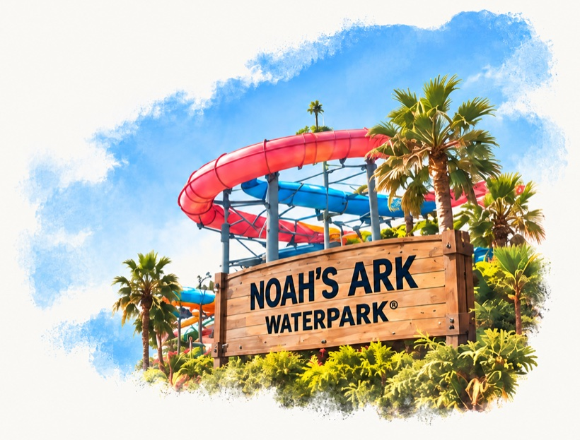

Five ways to set the photograph behind the headline. Each one is measured against the picture underneath it, and reports its own worst contrast below.
← Back to the live pageOption A Dissolve
The picture’s left edge is masked away to nothing, so the headline’s last line and the standfirst cross page colour carrying a trace of sky. This is what the live page runs.
Post about June on LinkedIn for a chance to win.

Measuring…
Option B Poster wash
One picture behind the whole hero, held back to a third of its strength so it reads as a tint rather than a photograph. Every line of copy sits over it.
Post about June on LinkedIn for a chance to win.
Measuring…
Option C Scrim
The photograph keeps its full colour. A wash of page colour is laid over its left third, under the words only, so nothing about the picture has to change.
Post about June on LinkedIn for a chance to win.
Measuring…
Option D Bleed
The picture runs off the right edge of the screen and is pulled up under the headline’s last line. The standfirst stays clear of it entirely.
Post about June on LinkedIn for a chance to win.
Measuring…
Option E Knockout bands
The largest picture of the five, at full strength behind everything. Each line of type carries its own band of page colour, so contrast never depends on what is underneath.
Post about June on LinkedIn for a chance to win.
Measuring…